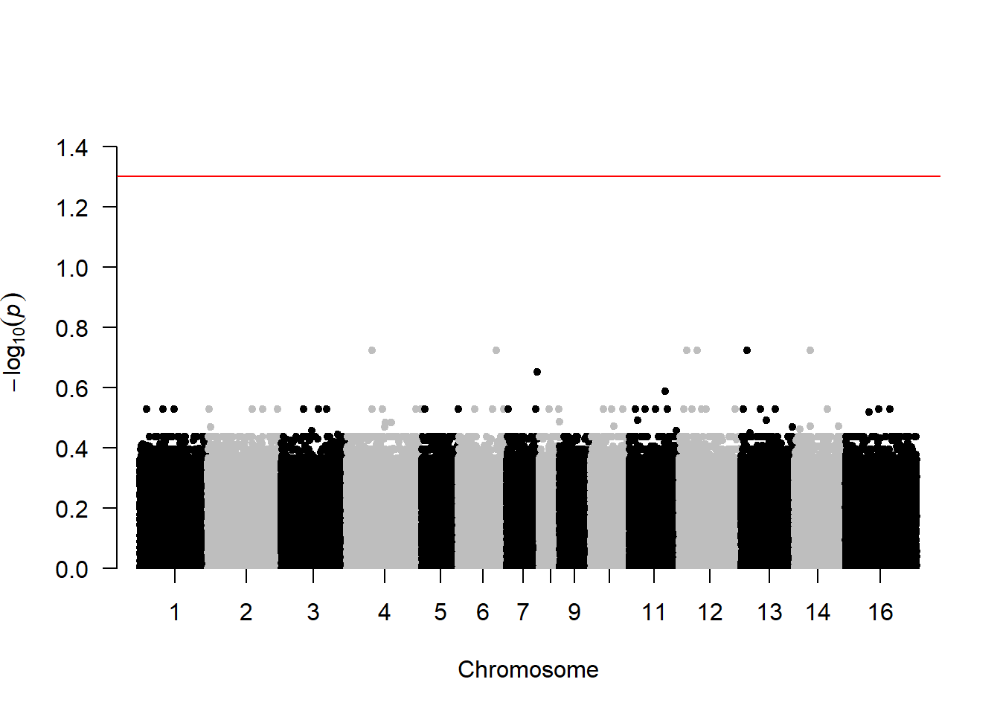

6 All Samples
6.1 GWAS - rrBLUP
6.1.2 Data
snp_matrix <-
fread("C:/Users/Christina/OneDrive - University of Maine System/pv-wgs/lowcoverage_maf_prune.raw") %>%
rename_with(gsub,
pattern = "\\_[A-Z]{1}$",
replacement = "", colnames(.))
snp_info <-
fread("C:/Users/Christina/OneDrive - University of Maine System/pv-wgs/lowcoverage_maf_prune.map") %>%
setNames(c("chr", "snp", "cM", "pos")) %>%
select(!cM) %>%
filter(snp %in% colnames(snp_matrix))
meta <-
fread("Input Files/metadata.csv") %>%
mutate(seq.id=gsub("B5GAN", "", seq.id),
condition=gsub("1", "Alive", condition),
condition=gsub("2", "Fresh Dead", condition),
condition=gsub("3", "Mod Decomp", condition),
condition=gsub("Moderate Decomposition", "Mod Decomp", condition),
condition=gsub("Advanced Decomposition", "Adv Decomp", condition),
age.class=factor(age.class, levels=c("Pup/Calf", "Yearling",
"Subadult", "Adult", "Unknown")),
seq.run=factor(seq.run, levels=c("1", "2"))) %>%
filter(seq.id %in% snp_matrix$FID)6.1.4 Population structure

6.1.4.2 PCA
Again, seemingly no sample clustering
pca <- prcomp(grm, scale=TRUE, center=TRUE)
# Variance explained by first 8 PCs
eigenvalues <- pca$sdev^2
prop <- round((eigenvalues/sum(eigenvalues)*100), 2)[1:8]
prop## [1] 2.51 1.60 1.51 1.50 1.48 1.47 1.45 1.44
pca_data <-
data.frame(
sample = rownames(pca$x),
x = pca$x[,1],
y = pca$x[,2]) %>%
merge(., meta, by.x="sample", by.y="seq.id")
labelx <-
paste0("PC1 (", prop[1], "%)", sep="")
labely <-
paste0("PC2 (", prop[2], "%)", sep="")
ggplot(pca_data, aes(x=x, y=y, col=classification)) +
geom_point() +
stat_ellipse() +
scale_color_manual(values=c("slategray", "#58baba")) +
labs(x=labelx,
y=labely) +
theme_bw() +
theme(panel.grid=element_blank())
ggplot(pca_data, aes(x=x, y=y, col=pdv)) +
geom_point() +
stat_ellipse() +
scale_color_manual(values=c("slategray", "#58baba", "coral")) +
labs(x=labelx,
y=labely) +
theme_bw() +
theme(panel.grid=element_blank())
ggplot(pca_data, aes(x=x, y=y, col=sex)) +
geom_point() +
stat_ellipse() +
scale_color_manual(values=c("slategray", "#58baba", "coral")) +
labs(x=labelx,
y=labely) +
theme_bw() +
theme(panel.grid=element_blank())## Too few points to calculate an ellipse## Warning: Removed 1 row containing missing values or values outside the scale range
## (`geom_path()`).
ggplot(pca_data, aes(x=x, y=y, col=age.class)) +
geom_point() +
stat_ellipse() +
scale_color_manual(values=c("slategray", "#58baba", "coral", "magenta", "black")) +
labs(x=labelx,
y=labely) +
theme_bw() +
theme(panel.grid=element_blank())## Too few points to calculate an ellipse## Warning: Removed 1 row containing missing values or values outside the scale range
## (`geom_path()`).
ggplot(pca_data, aes(x=x, y=y, col=condition)) +
geom_point() +
stat_ellipse() +
scale_color_manual(values=c("slategray", "#58baba", "coral", "magenta")) +
labs(x=labelx,
y=labely) +
theme_bw() +
theme(panel.grid=element_blank())## Too few points to calculate an ellipse## Warning: Removed 1 row containing missing values or values outside the scale range
## (`geom_path()`).
ggplot(pca_data, aes(x=x, y=y, col=seq.run)) +
geom_point() +
stat_ellipse() +
scale_color_manual(values=c("slategray", "#58baba")) +
labs(x=labelx,
y=labely) +
theme_bw() +
theme(panel.grid=element_blank())
6.1.5 Configure data
6.1.5.2 Configure phenotype data
Non-survivor = 0, Survivor = 1
phenotypes <-
meta %>%
select(seq.id, classification) %>%
setNames(c("id", "phenotype")) %>%
mutate(phenotype = ifelse(phenotype=="Non-survivor", 0, 1))
# Make sure sample ID order matches
unique(phenotypes$id == rownames(x)) # no## [1] TRUE FALSEphenotypes <-
phenotypes[order(match(phenotypes$id, rownames(x))), ]
unique(phenotypes$id == rownames(grm)) # yes## [1] TRUE## [1] TRUE6.1.6 GWAS Model 1: genomic relationship matrix
## [1] "GWAS for trait: phenotype"
## [1] "Variance components estimated. Testing markers."6.1.6.3 Manhattan Plot
# Threshold for Bonferroni correction
bf <- -log10(0.05 / nrow(snp_info))
fdr = -log10(0.05)
manhattan(gwasResults_1, suggestiveline = FALSE, col = c("black","grey"),
genomewideline = bf, logp = TRUE, ylim=c(0,7.5))
manhattan(gwasResults_1, suggestiveline = FALSE, col = c("black", "grey"),
genomewideline = fdr, p = "fdr", logp = TRUE, ylim=c(0, 1.5))